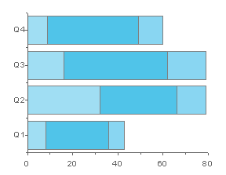
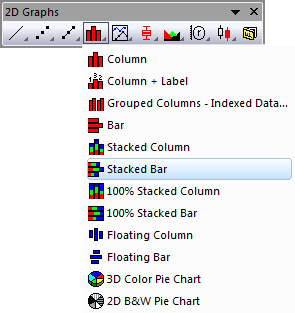

Gestapeltes Balkendiagramm
Stack-Bar-Graph
- 
Datenanforderungen
Wählen Sie mindestens eine Y-Datenspalte (oder einen Bereich aus mindestens einer Spalte) aus. Wenn es eine verbundene X-Spalte gibt, stellt die X-Spalte die X-Werte bereit; ansonsten wird ein Abtastintervall der Y-Spalte oder Zeilennummer verwendet.
Diagramm erstellen
Wählen Sie die gewünschten Daten aus.
Wählen Sie im Menü .
oder
Klicken Sie auf die Schaltfläche Gestapelte Balken in der Symbolleiste 2D Grafiken.
- 
Vorlage
BAR.OTP (im Origin-Programmordner installiert).
Hinweise
- Für jeden X-Wert bilden die Y-Werte die Länge der Balken ab. Jeder Balken besitzt eine feste Breite. Die Balken werden jedoch aufeinander gestapelt, so dass das zweite Balkensegment am Ende des ersten Balkens beginnt. Der Balkenstapel wird am zugehörigen X-Wert zentriert. Die X-Werte werden entlang der vertikalen Achse gezeichnet. Um die Balken ungestapelt anzuzeigen, wählen Sie bitte .
- Um eine Linie bei Y=0 anzuzeigen, aktivieren Sie auf der Registerkarte Grafik das Kontrollkästchen Nullwert im Balkendiagramm im Dialog Optionen ().